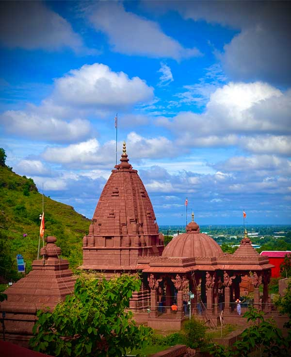

भांगसी माता गड
भांगसी माता गड – थोडक्यात परिचय
महाराष्ट्रातील मराठवाड्यात, औरंगाबाद शहराच्या पश्चिमेला जागतिक स्तरावर प्रसिद्ध असा दौलताबाद म्हणजेच देवगिरी किल्ला आहे. या देवगिरी किल्ल्याच्या दक्षिणेला, साधारण सहा–सात किलोमीटर अंतरावर, अत्यंत पवित्र आणि प्राचीन असे भांगसी मातेचा गड आहे. अनादी काळापासून भव–भयाचा नाश करणारी आदि शक्ति, आदि माया म्हणून भांगसी मातेचे हे स्थान अतिशय जागृत आणि पवित्र मानले जाते.
एकेकाळी देवगिरी किल्ला वैभवाच्या शिखरावर असताना भांगसी माता ही सर्वांची कुलदेवता व कुलस्वामिनी होती. साध्या जनतेपासून राजे–महाराजांपर्यंत सर्वजण भांगसी मातेची भक्ती करून शक्ती व मुक्ती प्राप्त करीत असत.
इतिहास आणि मंदिराचे नाश
पूर्वी गडावर भांगसी मातेचे अतिशय सुंदर, प्राचीन मंदिर होते.
कालांतराने अन्याय, अधर्म, अत्याचार करणाऱ्या लोकांची सत्ता देवगिरी किल्ल्यावर आली आणि भांगसी मातेचे जुने मंदिर उद्ध्वस्त झाले.
मंदिर उद्ध्वस्त झाल्यानंतर भक्तांनी गडावरील अनेक भूयारांपैकी एका गुहेत भांगसी मातेची स्थापना करून पूजा सुरू ठेवली.
पण हळूहळू गडाकडे दुर्लक्ष झाले, भुयारे पावसाचे पाणी, दगड–माती, घाण याने भरू लागली.
दारूच्या बाटल्या, हाडे व इतर कचऱ्यामुळे त्या गुहा भयानक आणि ओसाड वाटू लागल्या, त्यामुळे भक्तांची वर्दळ खूपच कमी झाली.

गुहेवरील भांगसी माता मंदिर (गडाच्या माथ्यावर)
सन 2000 साली भांगसी मातेच्या प्रेरणेने महामंडलेश्वर स्वामी परमानंदगिरीजी महाराज भांगसी माता गडावर आले. गडाची दयनीय अवस्था, गुहांमधील घाण, दारूच्या बाटल्या आणि हाडे पाहून स्वामीजींना खूप दुःख झाले. स्वामीजींनी केवळ दुःख व्यक्त न करता, मातेच्या कृपेने आणि भक्तांच्या श्रमदानातून गडावरील गुहांची मोठ्या प्रमाणात स्वच्छता सुरू केली. अनेक जिल्ह्यांमधील, विविध गावांतील भक्तांनी रात्रंदिवस मेहनत करून गुहा स्वच्छ केल्या. गुहा स्वच्छ झाल्यानंतर स्वामीजींनी जयपूरहून सुंदर अशी भांगसी मातेची मूर्ती आणली. पहिली शेंदूर लावलेली जुनी मूर्ती तशीच ठेवून, शास्त्रोक्त पद्धतीने होम–हवन करून नवीन मूर्तीची प्राणप्रतिष्ठा करण्यात आली. मातेचे अधिष्ठान आजही गडावरील गुहेतच आहे. सर्वांना सहज दर्शन व्हावे म्हणून त्या गुहेवर भव्य असे भांगसी माता मंदिर बांधण्यात आले, ज्यामुळे वरच्या भागात “गुहा + मंदिर” अशी पवित्र व्यवस्था तयार झाली. स्वामीजींच्या शिष्यांकडून दररोज नित्यनियमाने मातेची पूजा–अर्चा केली जाते. गडावर जाण्यासाठी पायथ्यापासून शिखरापर्यंत पायऱ्या बांधण्यात आल्या आणि त्या पायऱ्यांभोवती लाईटची व्यवस्था करण्यात आली, त्यामुळे रात्रीसुद्धा सुरक्षितपणे गडावर जाता येते. मुख्य रस्त्यापासून गडाच्या पायथ्यापर्यंत डांबरी रस्ता तयार करून भाविकांची सोयही करण्यात आली.
गडाच्या पायथ्याशी पशुपतयेश्वर महादेव मंदिर
भांगसी मातेच्या भूयाराजवळ असलेल्या दुसऱ्या विशाल गुहेत भगवान शिव, शिवपिंडी, नंदी आणि गणपती यांच्या मूर्तींचीही प्राणप्रतिष्ठा करण्यात आली. या परंपरेतून पुढे गडाच्या पायथ्याशी “पशुपतयेश्वर महादेव मंदिर” हे स्वतंत्र, शांत आणि दिव्य स्थळ म्हणून विकसित झाले असे मानले जाते. या मंदिरात भगवान पशुपतयेश्वर (महादेव), नंदी आणि गणपती यांची मनोभावे पूजा केली जाते. भक्त गडावर येताना प्रथम पायथ्याशी असलेल्या पशुपतयेश्वर महादेवाचे दर्शन घेतात आणि नंतर वर भांगसी मातेच्या गुहेकडे व मंदिराकडे जातात, अशी परंपरा अनेकांनी स्वीकृत केली आहे. महादेवाचे हे स्थान भांगसी मातेच्या गडाला अधिष्ठान देणारे आणि संतुलन राखणारे पुरातन शिवस्थान म्हणून भाविकांच्या मनात विशेष आदराचे स्थान मिळवते.